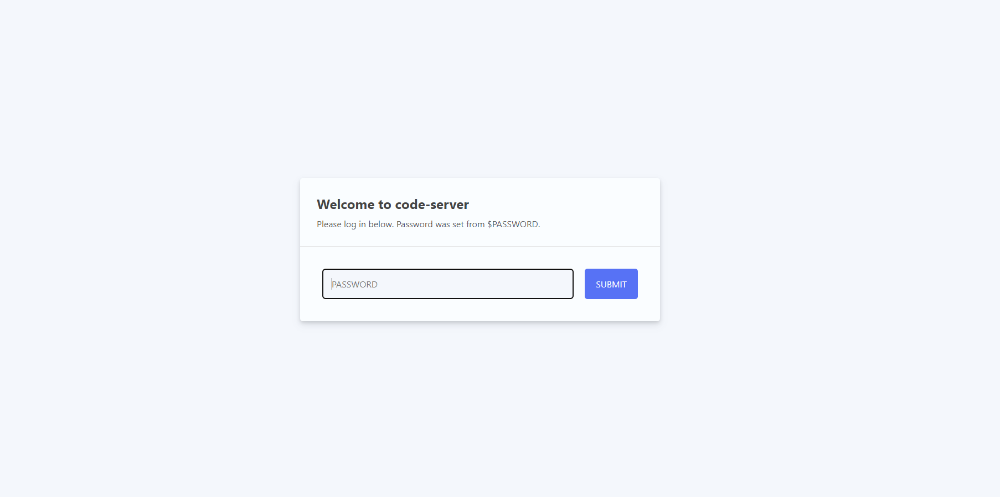
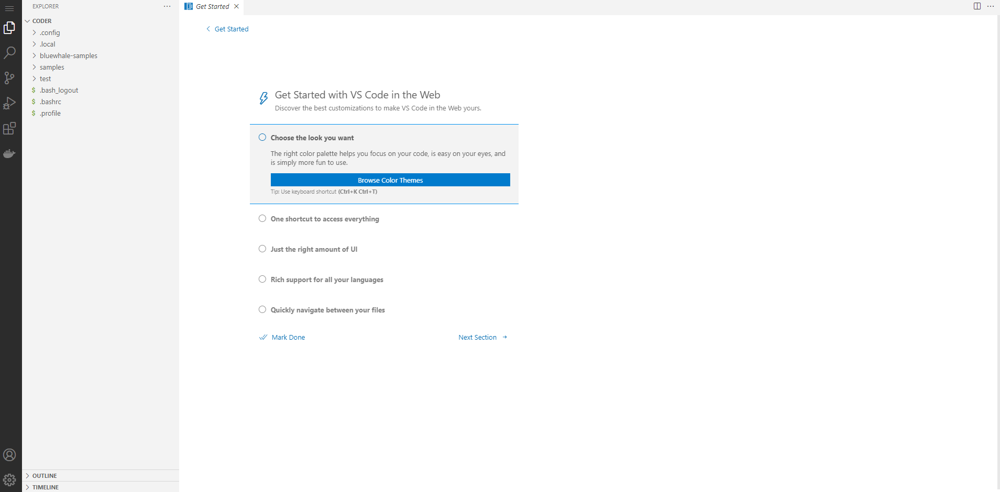

code server를 활용한 실습 환경 구성이 가능한지 검증해보자.
FROM codercom/code-server
COPY .vscode /home/coder/.local/share/code-server
RUN curl -Lo shellcheck-v0.7.1.linux.aarch64.tar.xz https://github.com/koalaman/shellcheck/releases/download/v0.7.1/shellcheck-v0.7.1.linux.aarch64.tar.xz \
&& tar -xvf shellcheck-v0.7.1.linux.aarch64.tar.xz \
&& chmod +x shellcheck-v0.7.1/shellcheck && sudo mv shellcheck-v0.7.1/shellcheck /usr/local/bin/ \
&& rm -rf shellcheck* && sudo chown -R coder:coder /home/coder/.local/share/code-server \
&& curl -LO https://storage.googleapis.com/kubernetes-release/release/`curl -s https://storage.googleapis.com/kubernetes-release/release/stable.txt`/bin/linux/amd64/kubectl \
&& chmod +x kubectl && sudo mv kubectl /usr/local/bin/
---
apiVersion: networking.k8s.io/v1beta1
kind: Ingress
metadata:
name: code-server
namespace: code-server
annotations:
kubernetes.io/ingress.class: nginx
cert-manager.io/cluster-issuer: letsencrypt-prod
nginx.ingress.kubernetes.io/force-ssl-redirect: "true"
kubernetes.io/tls-acme: "true"
spec:
tls:
- secretName: code-server
hosts:
- code-server.my-domain.com
rules:
- host: code-server.my-domain.com
http:
paths:
- backend:
serviceName: code-server
servicePort: 8080
apiVersion: v1
kind: Namespace
metadata:
name: code-server
---
apiVersion: v1
kind: Service
metadata:
name: code-server
namespace: code-server
spec:
ports:
- port: 80
targetPort: 8080
selector:
app: code-server
---
apiVersion: apps/v1
kind: Deployment
metadata:
labels:
app: code-server
name: code-server
namespace: code-server
spec:
selector:
matchLabels:
app: code-server
template:
metadata:
labels:
app: code-server
spec:
containers:
- image: codercom/code-server
imagePullPolicy: IfNotPresent
name: code-server
ports:
- containerPort: 8080
env:
- name: PASSWORD
value: "your password"
---
apiVersion: extensions/v1beta1
kind: Ingress
metadata:
name: code-server-ingress
namespace: code-server
annotations:
kubernetes.io/ingress.class: nginx
spec:
rules:
- host: "your_host_name.example.com"
http:
paths:
- backend:
serviceName: code-server
servicePort: 80
kubectl get ingress -n code-server
NAME CLASS HOSTS ADDRESS
PORTS AGE
code-server-ingress <none> code.**********.com a**************1-716630360.ap-northeast-2.elb.amazonaws.com 80 16m


$ uname -a
Linux code-server-84f85bfbb7-q9rs5 5.4.196-108.356.amzn2.x86_64 #1 SMP Thu May 26 12:49:47 UTC 2022 x86_64 GNU/Linux
$ sudo apt-get install -y wget
$ sudo wget -qO- http://get.docker.com/ | sh
[참고] https://docs.docker.com/engine/security/rootless/
# 시스템 전체의 Docker 데몬이 이미 실행 중인 경우 비활성화하는 것이 좋습니다.
$ sudo systemctl disable --now docker.service docker.socket
$ dockerd-rootless-setuptool.sh install
sudo sh -eux <<EOF
# Install newuidmap & newgidmap binaries
apt-get install -y uidmap
# Load ip_tables module
modprobe ip_tables
EOF
$ docker run hello-world
docker: Cannot connect to the Docker daemon at unix:///var/run/docker.sock. Is the docker daemon running?.
See 'docker run --help'.
# 도커 설치시 그룹은 생성되어 있을수 있다.
$ sudo groupadd docker
$ sudo usermod -aG docker $USER
# 그룹에 대한 변경 사항을 활성화
$ newgrp docker
curl -sL https://deb.nodesource.com/setup_14.x | sudo -E bash -
sudo apt-get install -y nodejs